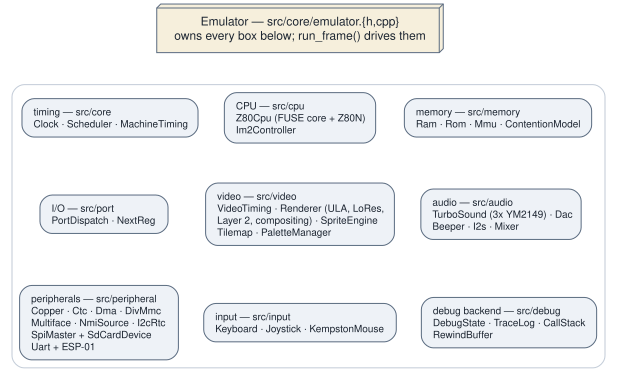

2.2 The emulator core¶
Emulator (src/core/emulator.h, src/core/emulator.cpp) is the machine.
It is a single non-copyable, non-movable object that owns every subsystem by
value, and it is the only thing a frontend ever needs to hold on to.

What Emulator owns, and the seams through which its parts reach one another.
What it owns¶
Everything, and in a specific order. The member declaration order in
emulator.h is an initialisation contract rather than a filing convention:
ram_ and rom_ must precede mmu_, and mmu_ and port_ must precede
cpu_, because the constructor initialiser list reads mmu_(ram_, rom_),
cpu_(mmu_, port_) and C++ initialises members in declaration order regardless
of how that list is written. In one place it is a destruction contract as
well: the emulated ESP-01's four members carry a long comment explaining that
reverse-order destruction is what guarantees its worker thread is joined before
anything the thread holds a pointer to is destroyed.
Grouped roughly, the object holds:
- Timing —
Clock(the 28 MHz master counter and the CPU divisors derived from it),Scheduler(a min-heap of(cycle, EventType, callback)),MachineTimingandVideoTiming. - Execution —
Z80Cpu,Im2Controller,ContentionModel. - Memory —
Ram,Rom,Mmu. - I/O —
PortDispatch,NextReg. - Video —
PaletteManager,Layer2,SpriteEngine,Tilemap, andRenderer, which itself owns theUlaandLores. - Audio —
Beeper,TurboSound,Dac,I2s,Mixer. - Peripherals —
Copper,Ctc,Dma,SpiMaster,I2cController,I2cRtc,Uart,DivMmc,Multiface,NmiSource,SdCardDevice, and the emulated ESP-01, which is off by default and therefore held behind a pointer. - Input —
Keyboard,Joystick,KempstonMouse,Md6ConnectorX2,MembraneStick,IoMode,EmuFnKeys,PhantomTypist. - Host-facing state that is not machine state —
DebugState,TraceLog,CallStack, the tape loaders and the tape saver, the video and RZX recorders, the rewind ring, the profiler, and the 640 × 256 framebuffer.
The snapshot loaders are a deliberate exception to all of that: NexLoader,
SnaLoader, SzxLoader and Z80Loader are not members. Each is constructed
as a local inside load_nex(), load_sna(), load_szx() and load_z80(),
because a snapshot is read exactly once and nothing about the loader needs to
outlive the call.
Subsystems are reached through accessors — mmu(), nextreg(), copper() and
so on — which simply hand out references. That is how the debugger panels, the
unit suites and the frontends all get at the machine; there is no façade layer
in between. In particular, the DebuggerInterface class described in the
design plan does not exist in the code. The Qt debugger talks to Emulator
accessors and to DebugState directly.
How subsystems reach each other¶
There are four mechanisms, listed here in rough order of how much of the codebase each one accounts for.
Direct calls through owned members cover the overwhelming majority.
run_frame() simply calls ctc_.tick(), nmi_source_.tick() and
renderer_.render_frame(...). There is no message bus and no event
indirection: the design's "direct method calls for performance" rule held all
the way through.
Two virtual seams, both declared in src/cpu/z80_cpu.h. MemoryInterface
(read/write) and IoInterface (in/out/nextreg_opcode_write) are the
only abstract base classes anywhere in the hot path. Mmu implements the
first, PortDispatch the second, and Z80Cpu holds a reference to each. They
exist so that a test can stand a CPU up against a stub memory and a stub I/O
map without constructing an entire machine, which is exactly what the CPU
suites do.
Callbacks registered at init() time. Emulator::init() is a very long
function, and almost all of its length is wiring — more than two hundred
std::function registrations. PortDispatch::register_handler(mask, value,
read, write) builds the I/O map by address-line masking, with the most
specific match winning; a handler may also call decline_write() so the write
falls through to the next candidate when its hardware enable gate is off, which
is how the VHDL's parallel decodes are reproduced.
NextReg::set_write_handler(reg, fn) and set_read_handler(reg, fn) install
the NextREG file's per-register behaviour, and peripherals raise interrupts
through Im2Controller callbacks registered the same way. Every one of these
lambdas captures this, which is the reason init() has to be re-run after
the object is reconstructed.
Host-boundary callbacks carrying no SDL or Qt type. A small set of
std::function members lets the core notify a frontend without knowing what a
frontend is: on_joystick_source_changed, on_input_state_restored, and the
polled take_hard_reset_request(). They are empty by default, so headless runs
and the unit suites simply never fire them.
Three ways the machine restarts¶
A ZX Spectrum Next distinguishes between a soft reset, which drops you back to NextZXOS without re-running the boot chain, and a power reset, which starts the machine over from nothing. Users see both, as Machine ▸ Soft Reset (F4) and Machine ▸ Power Reset (F1). Internally there is a third path that is neither of them, and confusing the three is an easy mistake to make.
| What it does | Trigger | |
|---|---|---|
soft_reset() |
Re-runs init(config_, preserve_memory=true). Clears flip-flop state but keeps RAM, the ROM-in-SRAM window, the boot-ROM overlay and the free-running clock and scheduler. Models tbblue's RESET_SOFT / NR 0x02 bit 0. |
NR 0x02 bit 0, F4 |
reset() |
Re-runs init(config_) in place, clearing RAM and reloading ROM. Despite the name it is not the machine's reset button: config_mode is preserved, so it would drop through to 48K BASIC rather than re-booting NextZXOS. It survives as the reinitialisation the file loaders need. |
file loaders, test setup |
| Cold boot | emu.~Emulator(); new (&emu) Emulator(); at the same address, followed by init(cfg) — emulator_cold_boot() in src/platform/emulator_boot.h. This is what the reset button, F1 and NR 0x02 bit 1 actually do. |
frontend, after take_hard_reset_request() |
Reconstructing in place, at a stable address, is the point of the third row:
host code that is holding &emu, or a reference to something inside it, stays
valid across a cold boot. The same trick is why a live worker thread inside the
object would be a silent-corruption hazard rather than an obvious crash, and it
is why the emulated ESP is owned here rather than by a frontend.
One consequence is worth spelling out. A program running on the emulated
machine can request its own hard reset, but that request cannot be serviced
from inside run_frame() — you cannot destroy the object whose code you are
currently executing. So the emulator only records the request, and the
frontend polls take_hard_reset_request() after each frame returns and
performs the reconstruction from there.